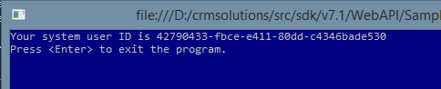

This simplest example introducing the web API preview available with Microsoft Dynamics CRM Online 2015 Update 1.
This sample cannot be run using an on-premises environment. See Microsoft Dynamics CRM Web API Preview for more information.
Pre-requisite: Before you can run this sample you must obtain a client ID and redirect URL as described in Register Application.
The WhoAmI program is one example of the least amount of code to call a web service method of Dynamics CRM Online and get a response. The sample performs these basic operations.
Let’s review the code and see what it is doing.
class Program
{
static public void Main(string[] args)
{
// TODO Substitute your correct CRM service address,
string serviceUrl = "https://mydomain.crm.dynamics.com";
// TODO Substitute your app registration values that can be obtained after you
// register the app in Active Directory on the Microsoft Azure portal.
string clientId = "e5cf0024-a66a-4f16-85ce-99ba97a24bb2";
string redirectUrl = "http://localhost/SdkSample";
class Program { static public void Main(string[] args) { // TODO Substitute your correct CRM service address, string serviceUrl = "https://mydomain.crm.dynamics.com"; // TODO Substitute your app registration values that can be obtained after you // register the app in Active Directory on the Microsoft Azure portal. string clientId = "e5cf0024-a66a-4f16-85ce-99ba97a24bb2"; string redirectUrl = "http://localhost/SdkSample";
We are defining some important string values that will be required when authenticating the logged on user and the application. The serviceUrl is the root address of your CRM organization. Your actual address will have a different value than show here. If you do not know your organization’s address, you can obtain it from the CRM web application by navigating to Settings > Customizations > Developer Resources.
For the clientId and redirectUrl values, use the values you obtain from the app registration process described in Register Application. You can reuse these values in multiple apps as long as it is for development and testing purposes. Once you are ready to publish an app to a store, you will need to obtain unique client ID and redirect URL values for your app. In a real world app, you would probably not want to hardcode these values into the app.
// Authenticate the registered application with Azure Active Directory.
AuthenticationContext authContext =
new AuthenticationContext("https://login.windows.net/common", false);
AuthenticationResult result =
authContext.AcquireToken(serviceUrl, clientId, new Uri(redirectUrl));
// Authenticate the registered application with Azure Active Directory. AuthenticationContext authContext = new AuthenticationContext("https://login.windows.net/common", false); AuthenticationResult result = authContext.AcquireToken(serviceUrl, clientId, new Uri(redirectUrl));
These two lines of code authenticate the logged on user and app registration. When executed, the user will be prompted to enter their credentials for Dynamics CRM and may be presented with a security prompt to accept allowing the app to access the user’s organization. The first line of code acquires the authentication context from a well-known authentication provider address. The second line performs the authentication and returns the result. Note that this authentication API is part of the Azure Active Directory Authentication Library (ADAL), which is available for a wide variety of platforms and programming languages.
In a more real world application, you would check the result to see if authentication passed or failed. For this simplistic sample, we will just assume it passed and ignore any possible exception (for now).
// Create an HTTP client to send a request message to the CRM Web service.
using (HttpClient httpClient = new HttpClient())
{
// Define the Web API address of the service and the period of time each
// request has to execute.
httpClient.BaseAddress = new Uri(serviceUrl);
httpClient.Timeout = new TimeSpan(0, 2, 0); // 2 minutes
// Set the authorization header.
httpClient.DefaultRequestHeaders.Authorization =
new AuthenticationHeaderValue("Bearer", result.AccessToken);
// Send the WhoAmI request to the Web API.
// GET api/data/WhoAmI
var response = httpClient.GetAsync("api/data/WhoAmI",
HttpCompletionOption.ResponseHeadersRead).Result;
if (response.IsSuccessStatusCode)
{
// Get the response content and parse it.
JObject jresponse =
JObject.Parse(response.Content.ReadAsStringAsync().Result);
Guid userId = (Guid)jresponse["UserId"];
Console.WriteLine("Your system user ID is {0}", userId);
}
else
Console.WriteLine("The request failed with a status of '{0}'",
response.ReasonPhrase);
}
// Create an HTTP client to send a request message to the CRM Web service. using (HttpClient httpClient = new HttpClient()) { // Define the Web API address of the service and the period of time each // request has to execute. httpClient.BaseAddress = new Uri(serviceUrl); httpClient.Timeout = new TimeSpan(0, 2, 0); // 2 minutes // Set the authorization header. httpClient.DefaultRequestHeaders.Authorization = new AuthenticationHeaderValue("Bearer", result.AccessToken); // Send the WhoAmI request to the Web API. // GET api/data/WhoAmI var response = httpClient.GetAsync("api/data/WhoAmI", HttpCompletionOption.ResponseHeadersRead).Result; if (response.IsSuccessStatusCode) { // Get the response content and parse it. JObject jresponse = JObject.Parse(response.Content.ReadAsStringAsync().Result); Guid userId = (Guid)jresponse["UserId"]; Console.WriteLine("Your system user ID is {0}", userId); } else Console.WriteLine("The request failed with a status of '{0}'", response.ReasonPhrase); }
In the above code, we will use the HttpClient class to send the WhoAmI unbound function message to the organization web service and receive a response. The two minute timeout value represents a reasonable time limit for those periods when the service is busy.
The program then sets the authorization header to authorize the logged on user’s access to the web service. Method parameters include the word “Bearer” to indicate the kind of access token being passed and the token itself.
The next line of code sends an HTTP GET command passing the relative address (from the base address) of the WhoAmI unbound function. Access to all functions, actions, and entity sets of the Web API organization endpoint is through the service URL + /api/data address. For more information about what messages are supported on this endpoint, see the online documentation.
After checking for a successful response, the code reads the response data into a JSON object and extracts the logged on user’s identifier.
To build and run the sample, follow these steps.
When run, the console output looks like this with a different value for the ID.
